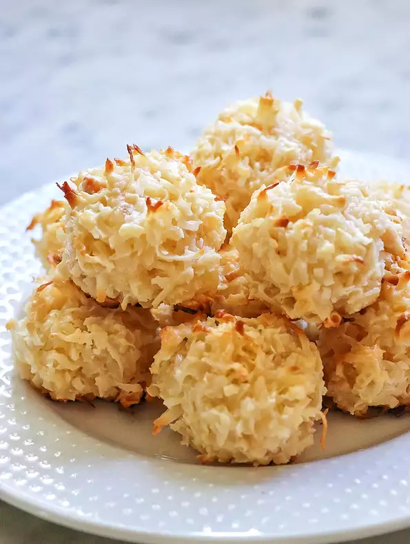

Pina Colada Macaroonss

I love the tropical taste of these chewy delights. It's important to dice the pineapple very small so it does not overwhelm the other flavors.
Ingredients
- ⅔ cup all-purpose flour
- 5 ½ cups flaked coconut
- 1 cup finely diced dried pineapple
- ½ cup finely chopped salted macadamia nuts
- ⅛ teaspoon salt
- 1 (14 ounce) can sweetened condensed milk
- 1 teaspoon rum flavored extract
- 1 teaspoon vanilla extract
Steps
- Preheat an oven to 350 degrees F (175 degrees C). Line baking sheet with parchment paper or a silicone mat.
- Combine the flour, coconut, pineapple, macadamia nuts, and salt in a large bowl. Stir in the sweetened condensed milk, rum extract, and vanilla extract. Drop golf ball-sized scoops of the dough 2 inches apart onto the prepared baking sheets.
- Bake in the preheated oven until coconut is toasted, 12 to 15 minutes.